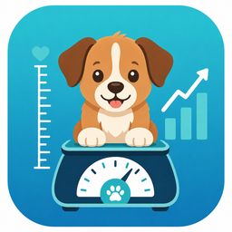

Probeer notities, groei en dagelijkse zorg met een verzonnen nest.
Alle gegevens zijn fictief. Registraties blijven alleen in het geheugen van deze pagina.
Demo laden…
Je kunt notities toevoegen en wijzigen, zorg afvinken en voedingsporties berekenen. Export, configuratie en echte Home Assistant-acties zitten niet in deze demo.